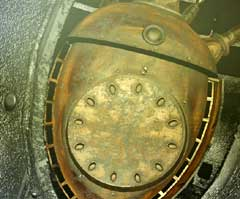
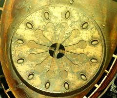
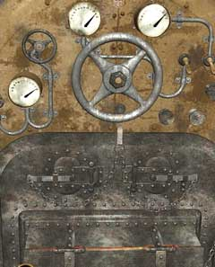
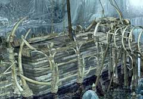

| 概要 | 地図 |
| 淡いヒント集 | ヒント集 | 的確なヒント集 |
| 攻略最短ルート |
| 場所選択に戻る |
ユコール族の村(後半)
|
心を開いて・・・
オスカーはあなたに明確な答えを告げずに、どこかへ移動してしまった。彼が移動した場所は、ハンスのいる祈祷師の所である。今こそ、あなたがオスカーの心を開かなければならない。あなたがやらなければならないことは、 ・オスカーの心を開く ・機関車を動かす ・船の氷を溶かす ということである。冒険を再開するには、まだ時間がかかる。

・心とは、オスカーの心臓部のことである。 ・心臓部には12個のボタンが付いている。 ・12という数字に関係するものを、ドリームキャッチャーで調べるとよい。 ・押すボタンは2つである。

・オスカーの心を開くには、二度ロックを外さなければならない。 ・これが二度目のロックである。 ・中央の穴を見てみよう。これを見て答えを想像するのだ。 ・押すボタンは4つである。 
・機関車をなぜ動かさなければならないのかというと、船の氷を溶かすためである。 ・機関車を動かす準備は、複雑である。 ・まず、石炭と水の確保。これで燃料がそろう。 ・次に、エンジンを動かしてから、水蒸気を発生させる。 ・そして、最後に氷を溶かすのだ。

・上の画像を見て欲しい。 ・3つのメーターが最大値を示し、下のエンジンでは石炭が赤く燃えている。 ・この状態になれば、船の氷を溶かすことができる。

・船の氷を溶かすと、このようになる。 |
| 場所選択に戻る |
| 概要 | 地図 |
| 淡いヒント集 | ヒント集 | 的確なヒント集 |
| 攻略最短ルート |
Syberia II
| 目次へ戻る | ページの上部へ |